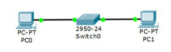
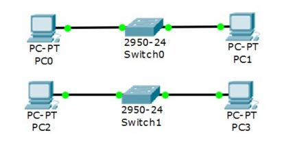
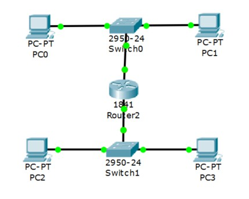
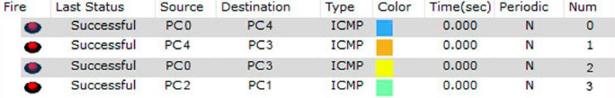

Лабораторная работа №1
Задачи:
- Зарегистрироваться на GitHub.
- Подключиться к общему репозиторию inet-2018.
- Разработать личную страницу-отчет.
- Написать wiki-статью по 22 билету 1 и 2 вопрос.
Выполнение работы:
- Создана страница пользователя на GitHub.
- Разработана личная страница-отчет.
- Странца выгружена в общий репозиторий.
Лабораторная работа №2
Задачи:
- Сформировать команду для разработки проекта.
- Определить роли команды.
- Разработать прототип приложения.
- Выложить доступ прототипа приложения на GitHub
Выполнение работы:
- Создана
Команда "СПИМ"
ИДМ-18-01
- Было принято решение - разработать прототип универсального тонкого клиента для организации рабочего места в соответствии с проектной ролью сотрудника.
Требования к Проекту:- Платформа должна быть централизованной.
- Платформа должна быть представлена в веб-интерфейсе.
- Платформа должна хранить сведения о сотрудниках (Ф.И.О., табельный номер, корпоративный e-mail, полное наименование подразделения, должность, проектная роль, роль в системе, пароль в зашифрованном виде, список опциональных бизнес-процессов).
- Платформа должна хранить сведения о бизнес-процессах (наименование, описание, ссылка, иконка).
- Платформа должна хранить сведения о доступности бизнес-процессов той или иной проектной роли (идентификатор проектной роли, идентификатор бизнес-процесса).
- Платформа должна содержать сведения о проектных ролях (наименование).
- Платформа должна обеспечивать аутентификацию и авторизацию.
- Платформа должна обеспечивать возможность пользователю с ролью «Администратор» добавлять новых пользователей, изменять информацию о пользователях, удалять пользователей, а также производить фильтрацию и поиск пользователей.
- Платформа должна обеспечивать возможность пользователю с ролью «Администратор» добавлять бизнес-процессы.
- Платформа должна обеспечивать возможность пользователю с ролью «Администратор» вносить изменения в бизнес-процессы и изменять все связанные с ними данные.
- Платформа должна обеспечивать возможность пользователю с ролью «Администратор» удалять бизнес-процессы и все связанные с ними данные.
- Платформа должна обеспечивать возможность пользователю с ролью «Администратор» добавлять проектные роли.
- Платформа должна обеспечивать возможность пользователю с ролью «Администратор» вносить изменения в проектные роли и изменять все связанные с ними данные.
- Платформа должна обеспечивать возможность пользователю с ролью «Администратор» удалять проектные роли и все связанные с ними данные.
- Платформа должна обеспечивать возможность пользователю с ролью «Администратор» добавлять доступы.
- Платформа должна обеспечивать возможность пользователю с ролью «Администратор» вносить изменения в доступы и изменять все связанные с ними данные.
- Платформа должна обеспечивать возможность пользователю с ролью «Администратор» удалять доступы и все связанные с ними данные.
- Платформа должна обеспечивать возможность просмотра персональных данных и изменения пароля пользователя в личном кабинете.
- Платформа должна проверять корректность введенных данных.
- Платформа должна корректно обрабатывать ошибки.
- По окончанию командной работы был создан проект." Из-за работы проекта с базой данных, запуск его вне компьютера, временно невозможен. Скриншоты:
Главная страница
Работа с 1С внутри платформы.png?raw=true)
Ограничение прав доступа.png?raw=true)
Настройки.png?raw=true)
Лабораторная работа № 3 (Вариант №5)
Задачи:
Расчет диапазонов подсетей.
| LanA | LanB | LanC | |
|---|---|---|---|
| Количество узлов | 35 | 120 | 512 |
| Subnet | 192.168.5.0 | 172.16.5.0 | 10.10.5.0 |
| Mask | 255.255.255.192 | 255.255.255.128 | 255.255.252.0 |
| Broadcast | 192.168.5.63 | 172.16.5.127 | 10.10.8.255 |
-
Разместить на рабочем поле коммутатор и два компьютера и соединить их

-
Добавить на рабочее поле еще один коммутатор с двумя компьютерами и настроить адресацию из другой подсети

-
Соединить коммутаторы между собой и проверить работоспособность сети (Не работает, так как коммутаторы подсоединяются только к маршрутизаторам

-
Добавить маршрутизатор на рабочее поле

-
Добавить на рабочее поле еще один маршрутизатор. Подключить к нему коммутатор и компьютер

Расчет диапазона сетей
| Устройство | IP-адрес | Маска | Шлюз |
|---|---|---|---|
| PC0 | 192.168.5.62 | 255.255.255.192 | 192.168.5.1 |
| PC1 | 192.168.5.61 | 255.255.255.192 | 192.168.5.1 |
| PC2 | 172.16.5.126 | 255.255.255.128 | 172.16.5.1 |
| PC3 | 172.16.5.125 | 255.255.255.128 | 172.16.5.1 |
| PC4 | 10.10.8.254 | 255.255.252.0 | 10.10.5.1 |
| R0 0/0 | 192.168.5.1 | 255.255.255.192 | - |
| R0 0/1 | 172.16.5.1 | 255.255.255.128 | - |
| R0 0/2 | 15.15.5.2 | 255.255.255.252 | - |
| R1 0/1 | 10.10.5.1 | 255.255.252.0 | - |
| R1 0/2 | 15.15.5.1 | 255.255.255.252 | - |
Установить банер на сетевое оборудование: banner motd [баннер]
Проверка работоспособности сети:

Пакеты успешно отправлены